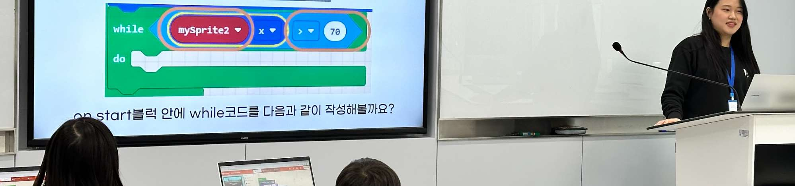
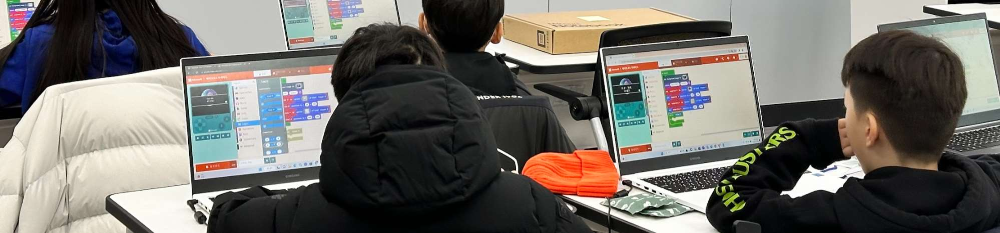

프로그램 #5
🎮 아두이노 게임기 × MakeCode Arcade
기본 코드가 업로드된 아두이노 보드로 휴대용 게임기를 만들고, MakeCode Arcade에서 블록코딩 게임을 실행해 직접 플레이하는 활동
키트 구성품을 확인하고 체크해주세요.
게임이 어떻게 만들어지는지, 하드웨어와 소프트웨어의 관계를 알아봅니다.
MakeCode Arcade의 블록코딩 환경을 탐색하고, 게임의 기본 구조를 이해합니다.

MDF 프레임에 디스플레이, 버튼, 조이스틱을 조립해 휴대용 게임기를 완성합니다.

버튼 연결 시 핀 번호를 코드와 맞춰야 합니다. 버튼이 반응하지 않으면 점퍼 와이어가 올바른 핀에 꽂혀있는지 확인하세요.
MakeCode Arcade에서 블록코딩으로 나만의 간단한 게임을 만들어 게임기에서 실행합니다.
첫 번째 게임은 "떨어지는 아이템 잡기" 같은 간단한 게임으로 시작하세요. 블록 3~4개만으로도 재미있는 게임을 만들 수 있어요!
서로의 게임기를 바꿔 플레이하고, 최고 점수에 도전합니다!
Microsoft MakeCode Arcade는 블록코딩으로 레트로 스타일 게임을 쉽게 만들 수 있는 플랫폼입니다. 텍스트 코딩 없이 블록을 드래그&드랍해서 게임을 만들고, 시뮬레이터에서 바로 실행해볼 수 있습니다. 만든 게임은 하드웨어 디바이스에 업로드해서 실제 게임기처럼 즐길 수 있어요.
MakeCode Arcade 바로가기